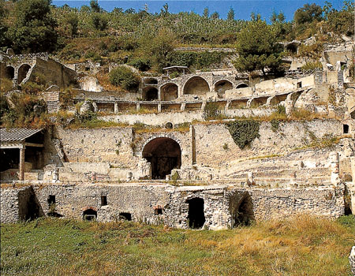
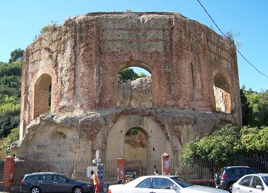

|
Parque Arqueológico de Baia
|

Termas
escalonadas di Sosandra |

Templo
di Venere |
Uno de los lugares más
famosos para veranear en época romana. De sus monumentos destacan el
criptopórtico, la villa dell’Ambulatio, el
templo
de Diana, el templo de Mercurio, la estatua acefala de Mercurio, el
complejo termal de Adriano y
Baia Sommersa.
|